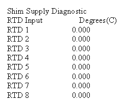

Proprietary to General Electric
Direction 5500113, Rev# 3
Discovery MR750 3.0T Service Methods
Module Version 1.0, Version Date 4/26/07
Proprietary to General Electric |
Diagnostics >> Peripherals >> Shim Supply Diagnostics
This diagnostic provides readback of the present temperature on the RTD channels.
This diagnostic is part of the Shim Supply Diagnostics that is comprised of a series of tests that verify and display various Shim Supply values by communicating from the SCP to the Shim Supply via the CAN link.
Shim Supply
Coil Channels
RTD Channels
Software Configuration
Standard Software
CAN communications NOT emulated
Hardware Configuration
MGD Chassis: SCP, AGP, and APS Processor boards. Bridge board
Shim Supply, cabling, etc
Illustration 1: Shim Supply Requirements

Illustration 2: Shim Supply Block Diagram

Select RTD Data, then press [Run].
The Diagnostic issues a command that instructs the Shim Supply to return the present temperatures for each of the RTD channels.
The Diagnostic displays the results.
| NOTE: | The Shim Supply automatically checks to ensure it is in the proper state prior to running the test. Commands to the Shim Supply are issued via the CAN interface on the SCP. |
A typical test output is shown in Illustration 3. Input errors, Shim Supply State errors, and test condition errors are indicated in red.
Illustration 3: Sample Output
